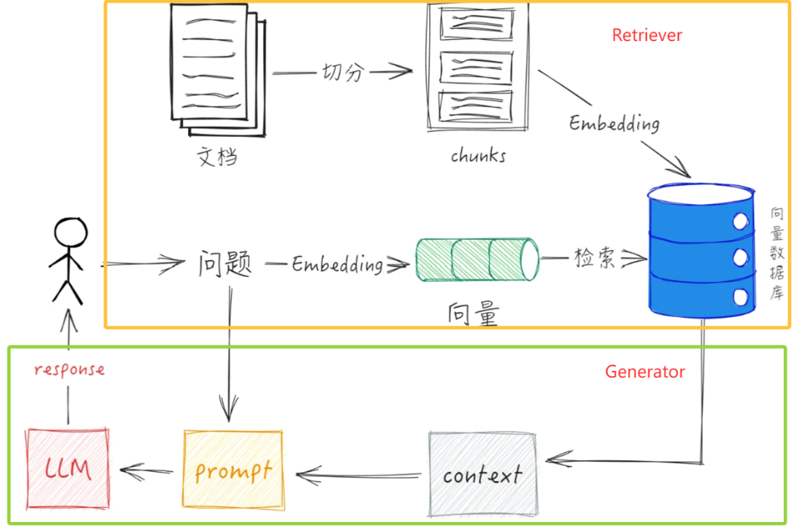

RAG 基础
什么是 RAG
RAG（Retrieval-Augmented Generation，检索增强生成）是一种将信息检索系统（Retrieval System）与大语言模型（LLM）结合的技术架构，其核心思想是：在模型生成答案之前，先从外部知 识库中检索与用户问题相关的内容，然后将这些内容作为上下文输入给模型，从而生成更加准确、可 靠的回答。
传统的大语言模型在推理时只能依赖训练阶段学习到的参数知识，因此存在两个明显问题：一是模型 知识具有时间截止（Knowledge Cutoff），无法了解最新的信息；二是模型在缺乏事实依据时容易产 生“幻觉”（Hallucination），即生成看似合理但实际上并不正确的内容。RAG 的出现正是为了解决 这些问题。
在 RAG 架构中，系统会首先对用户的查询进行语义向量化，然后在向量数据库或知识库中进行相似度 检索，找到最相关的文档片段（context）。随后，这些检索到的内容会被拼接为上下文，并与用户问 题一起输入到大语言模型中，模型在生成回答时会参考这些真实资料，从而提高回答的准确性和可解 释性。

从系统结构上看，RAG 本质上是一种“检索 + 生成”的组合式 AI 架构。检索模块负责找到相关信息， 而生成模块负责组织语言并输出最终答案。通过这种方式，大模型不再需要记住所有知识，而是可以 在需要时动态查询外部知识库。
RAG 为什么重要
在当前的大模型应用开发中，RAG 已经成为最主流、最核心的技术之一。绝大多数落地的 AI 应用，例 如企业知识库问答、智能客服系统、文档助手、代码助手等，几乎都建立在 RAG 技术之上。 首先，RAG 可以显著降低大模型的幻觉问题。当模型在回答问题时能够参考真实文档内容，其生成结 果会更加贴近事实，而不是完全依赖概率生成。
其次，RAG 可以让模型具备实时更新知识的能力。传统模型一旦训练完成，其知识基本固定。如果需 要更新知识，就必须重新进行训练或微调，这不仅成本高，而且周期长。而在 RAG 架构中，只需要更 新知识库中的文档即可，模型在下一次检索时就可以使用最新信息。
第三，RAG 能够实现企业私有知识的利用。许多企业内部拥有大量文档，例如产品手册、技术文档、 客户记录、内部流程等，这些数据通常不会出现在公开训练数据中。通过构建企业专属的向量数据库 并结合 RAG，可以让大模型理解和使用这些私有知识，从而构建真正可用的企业级 AI 系统。 最后，从工程角度来看，RAG 的实现成本远低于重新训练或微调大型模型。开发者只需要构建文档处 理流程、向量数据库以及检索逻辑，就可以让大模型具备强大的知识问答能力。因此，在实际 AI 系统 开发中，RAG 往往是构建知识型 AI 应用的首选方案。
RAG 与 Fine-tuning 的区别
在大模型应用开发中，RAG 经常会与 Fine-tuning（模型微调）进行比较。二者虽然都能够让模型具 备特定领域能力，但实现方式和适用场景有明显不同。
Fine-tuning 的核心思想是：在预训练模型的基础上，使用特定领域的数据对模型进行进一步训练，使 模型参数适应新的任务或知识领域。通过这种方式，模型可以在生成时直接利用这些知识，而不需要 额外的检索步骤。例如，在医疗、法律或金融领域，通过微调可以让模型更好地理解专业术语和领域 知识。
然而，Fine-tuning 也存在一些明显限制。首先，微调需要准备高质量的训练数据，并进行一定规模的 训练计算，这会带来较高的成本。其次，一旦模型完成微调，其知识仍然是静态的，如果知识发生变 化，就需要再次训练模型。最后，对于包含大量文档或持续更新的信息库来说，仅靠微调很难覆盖所 有内容。
相比之下，RAG 采用的是“知识外置”的思路。模型本身不需要记住所有信息，而是通过检索系统在 外部知识库中查找相关内容。这样一来，系统可以随时更新知识库，而不需要重新训练模型。
从应用角度来看，两者更像是互补关系而不是替代关系。一般来说：
• 当目标是让模型掌握某种能力或风格（例如对话风格、专业表达方式）时，更适合使用 Finetuning。
- 当目标是让模型访问大量知识或文档时，RAG 是更加高效和灵活的方案。
在实际的 AI 系统中，很多先进架构会同时结合两种方法：通过 Fine-tuning 提升模型的基础能力，再 通过 RAG 提供实时知识检索能力，从而构建更加智能和稳定的应用系统。